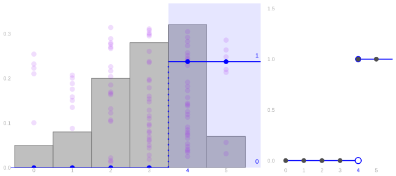
21 Concentration
$$ \newcommand{X}{} \newcommand{Y}{} % A hex digit after # inside a macro body is eaten by build-time expansion, so digit-leading hexes spell # via .
$$
This chapter is optional and nothing in it is on an exam. That is what lets it go further than the rest: these are the bounds you reach for when the sample is small enough that a normal approximation would be dishonest.
An Expectation Alone Bounds a Probability: Markov’s Inequality
Recall: Indicators
The indicator is 1 for the points inside the blue region and 0 for the points outside. The mean of the indicators is the fraction of points inside. That is the tool from the last section, used on an event of the form X\ge t: \mathop{\mathrm{E}}[1_{\ge t}(X)]=P(X\ge t).
How Much Can Lie Above t?
Suppose X\ge0 and we know \mathop{\mathrm{E}}[X]. For t>0, how large can P(X\ge t) be?
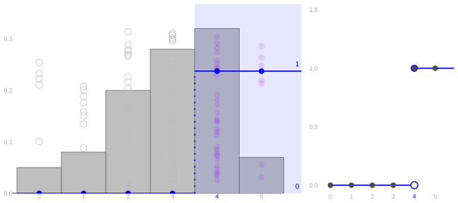
Each dot’s area is now the value of the indicator at that dot: zero below t, one at or above it, and the step function beside the histogram is what that draws. The indicator counts the tail. Can we bound it using a multiple of x?
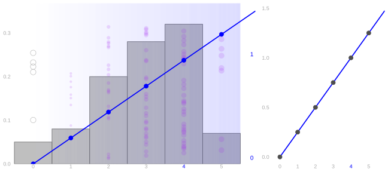
For x\ge0, the ramp u_t(x)=x/t stays above the indicator: 1_{\ge t}(x)\le u_t(x).
The horizontal axis still shows x. Height now shows the value represented by shade and dot area. For every nonnegative x, \begin{aligned} x\ge t &: \quad 1_{\ge t}(x)=1\le x/t,\\ 0\le x<t &: \quad 1_{\ge t}(x)=0\le x/t. \end{aligned}
Averages Keep the Order
If a(x)\le b(x) for every possible value x of X, then \mathop{\mathrm{E}}[a(X)]\le \mathop{\mathrm{E}}[b(X)]. The proof is just the definition of expectation. Every difference b(x)-a(x) is nonnegative, and every probability is nonnegative, so \mathop{\mathrm{E}}[b(X)]-\mathop{\mathrm{E}}[a(X)] =\sum_x \{b(x)-a(x)\}P(X=x)\ge 0.
Markov’s Inequality
For every nonnegative random variable X and t>0, \begin{aligned} P(X\ge t) &\overset{\texttip{\small{\text{?}}}{probability as expectation}}{=}\mathop{\mathrm{E}}[1_{\ge t}(X)]\\ &\overset{\texttip{\small{\text{?}}}{the ramp bounds the indicator}}{\le}\mathop{\mathrm{E}}[u_t(X)]\\ &\overset{\texttip{\small{\text{?}}}{the bounding ramp}}{=}\mathop{\mathrm{E}}\sb*{\frac Xt}\\ &\overset{\texttip{\small{\text{?}}}{linearity}}{=}\frac{\mathop{\mathrm{E}}[X]}t. \end{aligned}
Versatility
Back to the question we left standing at the start: does the expectation tell us where the distribution is located, i.e. where draws are likely to be? If not, why is that useful? Here are three shapes with the same picture drawn on each — a single bump, then flips, then two bumps — with the ramp shade across the panel, the green line at the mean, and the cutoff at t dotted.
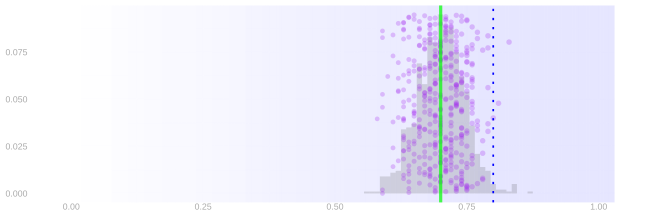
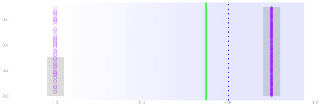
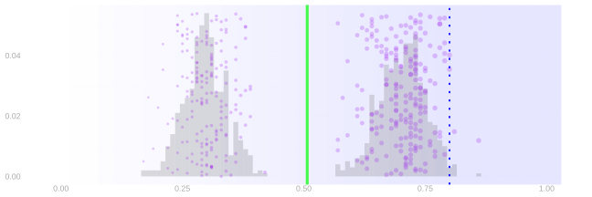
On the flips and on the two bumps the mean is nowhere a dot lands. This is not location in the traditional sense, and Markov’s inequality still works: the bound needs the mean and nonnegativity, and neither of those asks where the draws are.
Why Must X Be Nonnegative?
Here is one.
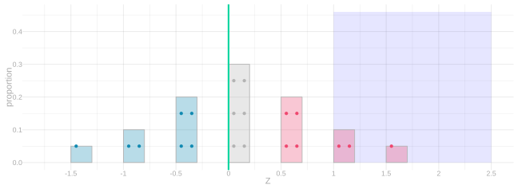
For this centered variable Z, \mathop{\mathrm{E}}[Z]=0,\qquad P(Z\ge1)=\frac{36}{240}>0=\frac{\mathop{\mathrm{E}}[Z]}1.
For a Sample Mean
The sample proportion \hat\theta is nonnegative and its expectation is \theta, so Markov applies to it directly. Take the threshold t=20\theta, P(\hat\theta\ge 20\theta)\le\frac{\mathop{\mathrm{E}}[\hat\theta]}{20\theta}=\frac{\theta}{20\theta}=\frac1{20}. So with probability at least 95\% our estimate came in below 20\theta, and rearranging that gives a lower bound on the population proportion, \theta\ge 0.05\,\hat\theta. At \hat\theta=0.7 that is \theta\ge 0.035. The bound is one-sided, and nothing in it mentions n.
Beside it, the one-sided bound you get from the bootstrap or the binomial. Each picture below is one sample size — twenty, eighty, then three hundred twenty observations per sample. The bars are the sampling distribution of \hat\theta, the dots are a hundred estimates drawn from it, and five of those estimates are drawn with their lower bounds: Markov’s in midnight and the plug-in bound in pink. “How bad might this be for us” is a legit question.
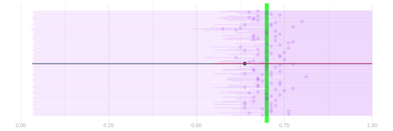
Bounding 1-\hat\theta instead gives a bound on the other side: transforming to nonnegative. That’s a homework trick.
Markov Asks How Big. So Ask How Far.
Markov does not care about sample size. The resolution is not hard — Markov simply doesn’t ask the question of how concentrated things are, how far things are from the mean. It just asks how big. So ask.
Chebyshev’s inequality
We do not need a new inequality. Markov’s applies to any nonnegative random variable, and above we fed it our estimate. That gave one side only, a bound on landing far above the mean and nothing about landing far below:
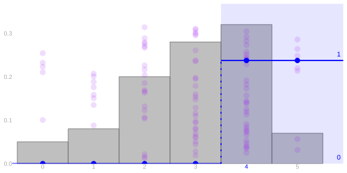
The distance from the mean is different. Write Z=X-\mathop{\mathrm{E}}[X] for the centered outcome. The distance is large when our estimate lands far above the mean and also when it lands far below, so bounding its size bounds both sides at once. And Markov will take it, because a distance is never negative.
There are two obvious ways to turn our error into a distance. We can take the absolute value, |Z|, or we can square it. Absolute values are unpleasant to calculate with — they do not come apart when we add things up, and adding things up is most of what we do here. Squaring is just arithmetic by comparison. So let’s square, and we will see shortly why squaring, of all the options, is the one that pays.
From distance to squared distance
The events |Z|\ge t and Z^2\ge t^2 select exactly the same observations. We want to bound the probability that X is far from its mean. In the first picture, select the observations at distance at least t on either side. Fold the negative side onto the positive side; those same observations are now above t. Square the distances and the threshold.

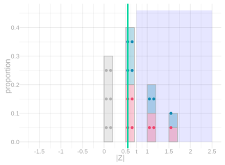
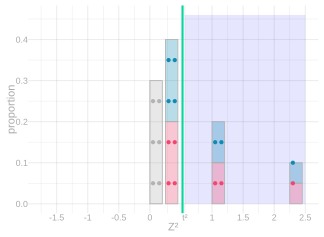
Signed distances. Select observations at distance at least t from zero, on either side. These are precisely the observations at distance at least t from the original mean.
Fold. Replace each distance by its absolute value. The selected observations are now at or above t; their number and probability have not changed.
Square. Square every absolute distance and square the threshold. The same observations are now at or above t^2, and every value is nonnegative.
Chebyshev’s inequality is Markov’s inequality applied to squared distance: for t>0, P\left(|X-\mathop{\mathrm{E}}[X]|\ge t\right) \le\frac{\mathop{\mathrm{E}}[(X-\mathop{\mathrm{E}}[X])^2]}{t^2}.
The first two pictures changed the event’s description without changing which observations it contains. The indicator-to-ramp comparison bounds its probability:

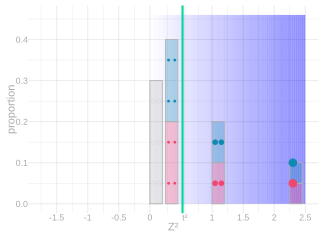
Indicator average. Assign one to each selected observation and zero to every other observation. The average is the probability we want to bound: P(Z^2\ge t^2)=\mathop{\mathrm{E}}[1_{\ge t^2}(Z^2)].
Ramp average. Replace the indicator by squared distance divided by t^2. Every value is at least as large, so its average bounds the indicator average: \mathop{\mathrm{E}}[1_{\ge t^2}(Z^2)]\le\mathop{\mathrm{E}}[Z^2/t^2].
Putting those together, \begin{aligned} P\left(|X-\mathop{\mathrm{E}}[X]|\ge t\right) &=P(Z^2\ge t^2)\\ &=\mathop{\mathrm{E}}[1_{\ge t^2}(Z^2)]\\ &\le\mathop{\mathrm{E}}[Z^2/t^2]\\ &=\frac{\mathop{\mathrm{E}}[Z^2]}{t^2}. \end{aligned}
How narrow can the right interval be?
Chebyshev tells us a width that is sufficient. Can the moments also tell us how narrow a calibrated interval could be? Almost: we need two summaries of the absolute error, its mean and its mean square.
Return to the two distance pictures. They follow the same centered observations Z. The green lines mark two different averages: the average of |Z| and the average of Z^2.

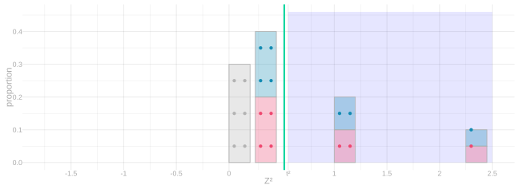
Average absolute distance. Every observation’s distance from the mean, averaged; the green line marks \mathop{\mathrm{E}}|Z|. A point twice as far contributes twice as much.
Average squared distance. The same distances, squared before averaging; the green line marks \mathop{\mathrm{E}}[Z^2], the variance. Squaring makes far points count quadratically more — twice as far is four times the contribution — which is what makes this average sensitive to the largest errors.
For a nonnegative random variable A with finite, positive second moment, the Paley–Zygmund inequality implies, for 0\le t<\mathop{\mathrm{E}}[A], P(A\ge t)\ge\frac{(\mathop{\mathrm{E}}[A]-t)^2}{\mathop{\mathrm{E}}[A^2]}. Apply it to A=|\hat\mu-\mu|. For an unbiased estimator, \mathop{\mathrm{E}}[A^2] is its variance; \mathop{\mathrm{E}}[A] is its mean absolute error. This supplies lower control of the tail using those two moments. A derivation using the indicator split and Cauchy–Schwarz is on Wikipedia.
For 95\% coverage, any symmetric half-width smaller than \max\left\{0,\;\mathop{\mathrm{E}}[A]-\sqrt{0.05\mathop{\mathrm{E}}[A^2]}\right\} misses more than 5\% of the probability. The dashed yellow intervals below mark that lower control of width; they are not another proposed 95\% interval. The exact calibrated widths lie between it and the sufficient Chebyshev widths.
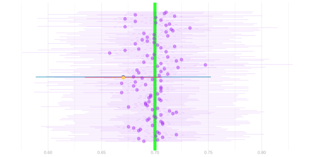

Why is variance alone insufficient? Consider an error that is zero with probability 95\% and is -L or L with probability 2.5\% each. Its mean is zero and its variance is 0.05L^2. Push the two tails farther out: the variance grows, but the interval containing just zero still contains 95\% of the probability. A large variance need not mean that most errors are large.



Tail distance 1. The error is 0 with probability 95% and \pm 1 with probability 2.5% each. Mean 0; variance 0.05.
Tail distance 2. The tails move out; the probabilities do not. A narrow interval around zero still contains 95% of the probability, and the variance has quadrupled to 0.2.
Tail distance 4. Tails at \pm 4; variance 0.8 — sixteen times the first picture’s — and zero-alone still covers 95%.
Tail distance 8. Tails at \pm 8; variance 3.2, sixty-four times the first. A large variance has not made the typical error large — which is the point: the variance alone cannot narrow a calibrated interval.
The lower-bound comparison therefore uses the mean absolute error as well as the variance. The binomial and hypergeometric examples let us calculate both, and place the exact calibrated width between the lower control and the sufficient Chebyshev width.